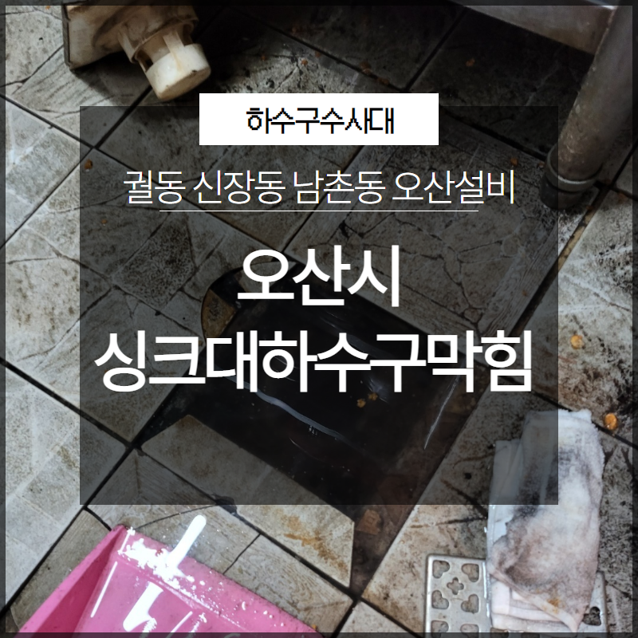
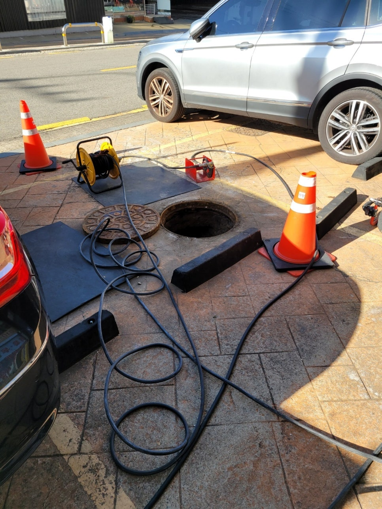
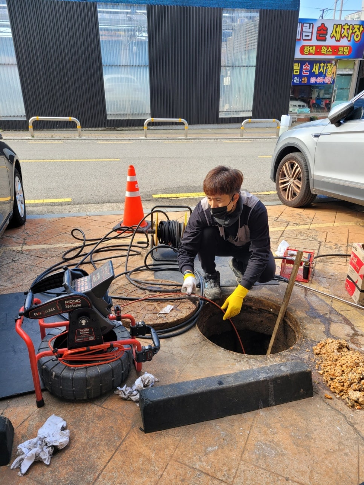
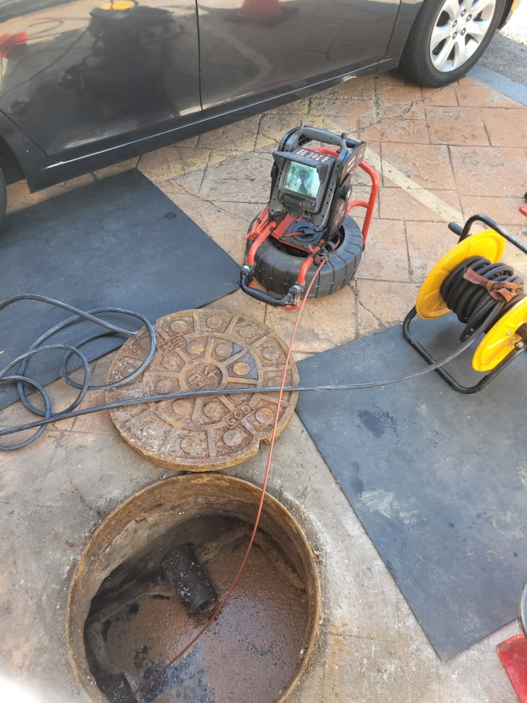
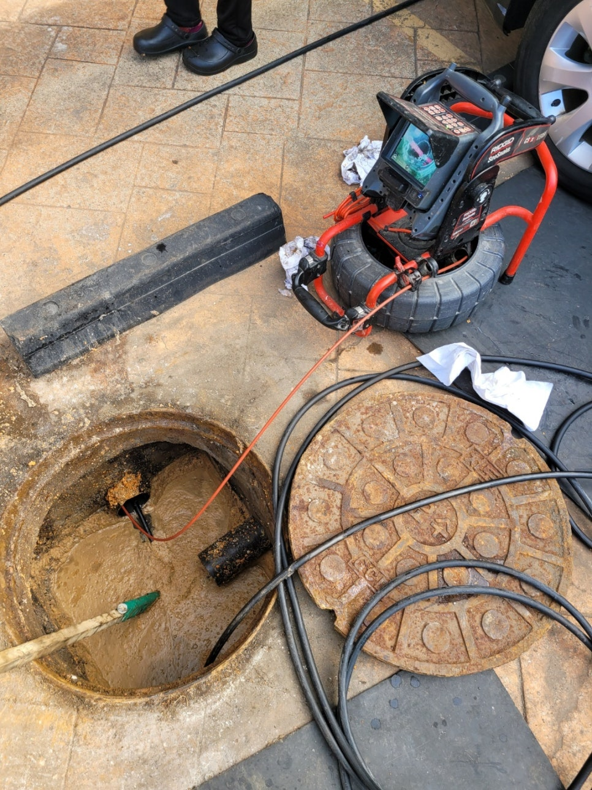

🏠 오산시 궐동 신장동 남촌동 싱크대하수구막힘 오산설비 막힘 해결
오산 신장동 싱크대막힘 전문 시공 후기

📋 작업 개요
- 위치: 오산 신장동, 신장동, 오산
- 서비스 유형: 싱크대막힘, 하수구막힘, 배관막힘
- 작업 일시: 2023. 4. 30. 16:31
- 업체명: 하수구수사대 (010-5615-2118)
🔍 문제 상황
안녕하세요. 하수구수사대입니다.
배관 막힘은 언제 어디서든지 발생을 할 수 있는 만큼 대처 방법을 알아두시는 것이 좋은데요. 저희는 배관막힘을 전문으로 해결을 하고 있는 곳인 만큼 여러 현장을 통해서 배관 막힘으로 인해서 힘들어하시는 분들을 위해서 보다 발 빠르게 뛰고 있습니다.
배관 막힘은
일상생활을 하는 데 있어서 상당한 불편함을 줄 수 있는 것인 만큼 이에 대한 해결 방안을 잘 알아두시는 것이 필요한데요. 눈에 보이지 않는 배관인 만큼 전문 업체를 통해서 해결을 하시는 것이 필요하다고 할 수 있습니다.

🔎 원인 분석
💡 전문가 진단: 배관 막힘은
그래서 오늘은 방문을 했던 배관 막힘의 현장 후기를 통해서 배관 막힘을 어떻게 해결하게 되는지를 알려드리도록 하겠습니다. 배관 막힘은 언제 어디에서나 발생을 할 수 있는 만큼 항상 주의를 하시는 것이 필요한데요.
하지만 막상 배관 막힘이 발생을 하게 되면 우리는 당황할 수밖에 없을 것입니다. 이렇게 배관 막힘이 발생을 했을 때에는 당황하지 마시고 잘 대처를 하는 것이 중요한데요. 오히려 급하게 해결을 하려고 하다 보면 배관 손상을 일으키거나 더 힘든 상황으로 발전이 될 수 있는 것입니다.
육안으로 보이지 않는 배관 막힘은 누구에게나 힘들고 불편함이 많은 상황인 만큼 이번 방문 현장도 빠른 조치를 위해서 방문을 해드렸습니다. 이번 현장은 오산시 궐동 신장동 남촌동 싱크대하수구막힘 오산설비 방문 현장으로 한적한 동네에 있는 한 식당의 싱크대가 막히게 되면서 연락을 주신 곳이었습니다.
현장에 도착을 하니 싱크대 쪽에서는 이미 조금씩 악취까지 올라오고 있는 상황이었는데요. 고객님께서 얼마 전부터 하수구를 통해서 물을 흘려보냈지만 잘 내려가지 않는 것이 며칠 반복이 되다가 결국에는 아예 막혀버렸다고 하셨습니다.
식당 같은 경우는 항상 음식을 하고 물을 사용하는 곳인 만큼 막힘이 발생할 확률이 상대적으로 많은 곳이라고 할 수 있습니다. 이렇게 배수가 잘되지 않는 상황이 발생을 하게 되면 그때 바로 조치를 취하시는 것이 필요하다고 할 수 있는데요.

🔧 작업 과정
하수구 막힘이 발생을 하게 되면
직접 해결을 하지 마시고 전문 업체를 통해서 해결을 하시는 것이 보다 빠르고 확실하게 막힘을 해결할 수 있는 것입니다. 배수구가 막히게 되는 원인으로는 여러 가지가 있을 수 있는데요.
이번 오산시 궐동 신장동 남촌동 싱크대하수구막힘 오산설비 현장의 경우에는 오래된 음식물의 찌꺼기들이 덩어리가 되면서 배관 막힘이 발생을 하게 된 것이었습니다.
그러므로 평소에 쾌적하게 배관 관리를 정기적으로 해주게 되면 어느 정도의 배관 막힘이 발생하는 빈도가 달라진다고 할 수 있습니다. 하수구의 물이 잘 내려가지 않게 될 때에는 배수관의 상태를 먼저 점검을 하고 이물질의 양이 많은 경우에는 전문 업체를 통해서 자세하게 상의를 해보는 것이 좋습니다.
현장에 도착을 하면
가장 먼저 배관 내시경을 이용해서 현장의 배관 내부 상황을 먼저 확인을 하는 작업을 하게 되는데요. 배관 내부에는 이물질 덩어리들과 함께 배관 벽면 쪽으로도 오래된 음식 찌꺼기들이 붙어있는 것을 확인하였습니다. 배관 내부의 이물질들을 모두 제거를 하기 위해서는 본격적인 장비 세팅을 통해서 작업을 시작하였는데요.
전문 업체의 경우는 내부를 확인을 한 후에 원인물질을 제거하는 작업을 하기 때문에 근본적인 해결이 가능하다고 할 수 있습니다. 오산시 궐동 신장동 남촌동 싱크대하수구막힘 오산설비 현장의 경우 배관 내시경을 통해서 이물질들이 완전히 제거되는 모습을 확인하고 작업을 마무리하였는데요.


✅ 작업 완료
고객님께서도 빠르게 배관 막힘을
해결하는 것을 보시고 아주 만족해하였습니다.




⚠️ 주방 싱크대 배관 막힘 예방 수칙
- ✅ 기름기가 묻은 식기나 프라이팬은 설거지 전 키친타올로 반드시 기름때를 닦아내세요.
- ✅ 주기적으로 싱크대 개수대에 뜨거운 물을 가득 받아 한 번에 내려 배관 내부 기름을 씻어내세요.
- ✅ 배수구 거름망을 미세한 필터로 사용하시고 음식물 찌꺼기가 틈으로 새어 들지 않게 관리하세요.
- ✅ 베이킹소다와 식초를 뜨거운 물과 함께 일주일에 한 번씩 부어주면 배관 살균과 막힘 예방에 좋습니다.
💡 핵심 정리
- 확실한 장비 작업(내시경 점검 및 샤프트 스케일링)으로 원인을 뿌리 뽑습니다.
- 작업 후 1년 이내에 동일한 부위 재발 시 100% 무상 A/S 서비스를 보장합니다.
- 서울 · 경기 · 인천 전 지역에 24시간 언제든 긴급 출동할 수 있도록 항시 대기 중입니다.
❓ 자주 묻는 질문 (FAQ)
🚨 오산 신장동 싱크대막힘 문제로 고민이신가요?
정확한 원인 진단과 확실한 시공으로 재발 없는 해결을 약속드립니다.
24시간 긴급 출동 | 서울 · 경기 · 인천 전지역 | 1년 내 재발 시 무상 A/S